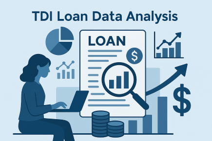

TDI Loan Data Analysis
I analyzed and provided insights to support TDI as an institution giving out loans in making informed decisions and driving business growth.
Tools used: Excel.
Hi, I'm Adedamola Makinde, a data analyst passionate about transforming
complex data into meaningful insights. With expertise in statistics,
data-cleaning, and visualization, I help organizations across various
industries optimize operations, identify new opportunities, and make
strategic decisions based on data insights. This portfolio showcases
projects across various domains, highlighting my ability to uncover
trends, enhance performance, and communicate findings effectively.
These are the core tools and skills I use in processing data and extract meaningful insights.
I use data to find answers, spot patterns, and tell meaningful stories. With skills in Excel, SQL, Python, and Tableau, I clean and analyze data to pull out insights that matter.
Expertise in presenting data visually using tools like Excel and Power BI. This helps in communicating insights clearly and effectively.
I possess the ability to present findings clearly to stakeholders in both technical and non-technical language, including written reports and presentations.
Structured approach to problem-solving by breaking down complex issues into manageable parts, analyzing the data carefully, and applying the right analytical methods to uncover clear, actionable insights.

I analyzed and provided insights to support TDI as an institution giving out loans in making informed decisions and driving business growth.
Tools used: Excel.

Phasellus convallis elit id ullamcorper pulvinar. Duis aliquam turpis mauris, eu ultricies erat malesuada quis. Aliquam dapibus.

Phasellus convallis elit id ullamcorper pulvinar. Duis aliquam turpis mauris, eu ultricies erat malesuada quis. Aliquam dapibus.
Interested in collaborating or have a data-driven project in mind? I'm always open to new opportunities, freelance work, or just a good conversation about data. Feel free to reach out directly — I’d be happy to connect and see how I can help turn your data into meaningful insights.